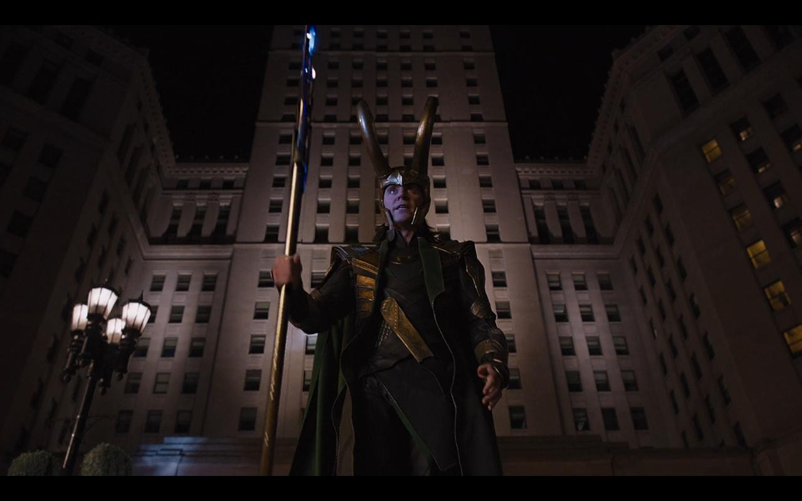
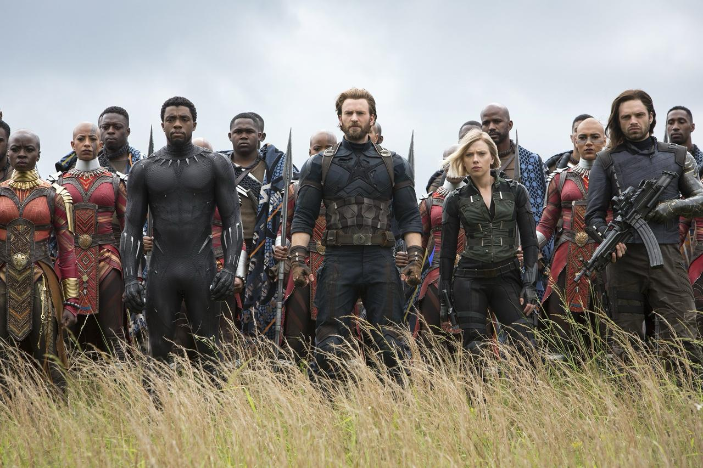
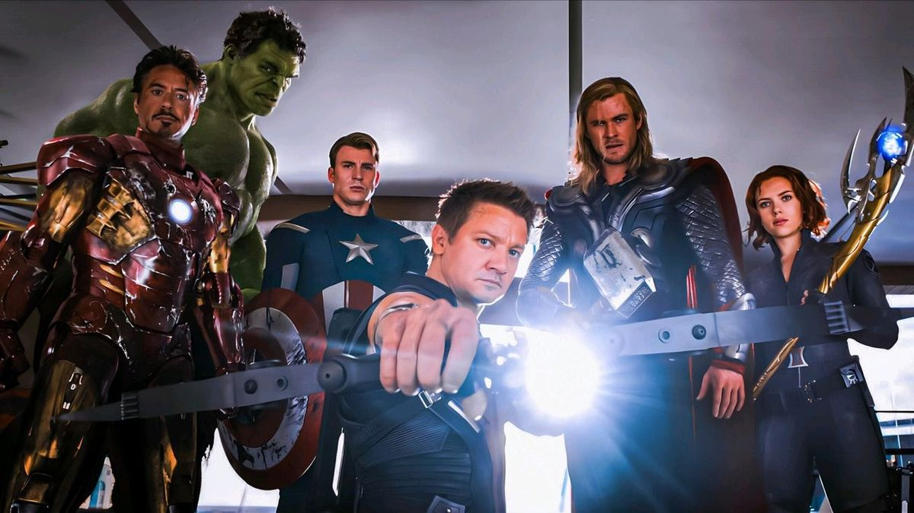
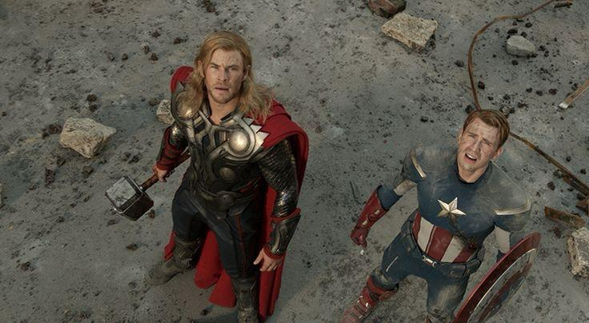
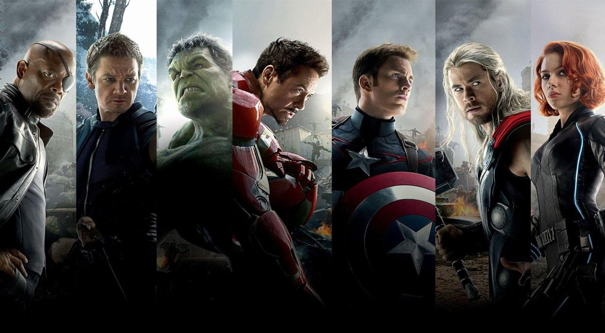

Offline Website Builder
The Avengers (2012) – Official still / promotional photo
Loki standing in the center of a building corridor, both sides balanced
Symmetrical Composition
Loki is positioned exactly in the middle of the frame, with architectural elements mirrored on both sides. This symmetry reinforces his dominance and power in the scene.
Loki 位于画面正中，左右建筑元素镜像或近似镜像，造成强烈中心感，对称性增强角色的威严与张力。

Avengers: Infinity War (2018) – official still
The Avengers lined up in formation on an open field
Leading Lines Composition
The arrangement of characters and background horizon creates visual lines that guide the viewer’s eye toward the group — emphasizing unity and purpose.
英雄们排成线或群体向前，草地与天空背景分层，引导视线向前或向中心集中，突出群体与角色立场。

The Avengers (2012) - Marvel Studios / Directed by Joss Whedon
Avengers Heroes Gathering Shot
Low Angle Composition
The camera, positioned below the characters and tilted upward to capture the entire team, reinforces the heroic presence and power. This low angle makes each character appear tall and imposing within the frame. Combined with the central light and Hawkeye's central pose, this creates a strong visual focal point. The overall image conveys a sense of unity, strength, and direct confrontation.
摄影机位于人物下方，向上仰拍整个团队，强化了英雄的气势与力量感。低角度让每位角色在画面中显得高大且充满威严，配合中央的亮光与居中的 Hawkeye 姿势，形成强烈的视觉焦点。整体画面传递出团结、力量与正面对抗的气势。

The Avengers (2012): Infinity War - Marvel Studios / Directed by Joss Whedon
The scene where Thor and Captain America look up at the sky
Bird’s-eye / Overhead / Top-down Composition
The camera is positioned above the characters, capturing the two heroes as they gaze upwards. This composition, through its vantage point, emphasizes the characters' insignificance and the tension they feel when facing a higher, more powerful force. The dust and gravel on the ground enhance the sense of battlefield oppression.
摄影机位于人物上方，俯拍两位英雄仰望天空的瞬间。此构图通过从高处俯视的角度，强调角色面对更高、更强大力量时的渺小与紧张氛围。画面中地面的灰尘与碎石增强了战场感与压迫感。

This project explores four fundamental cinematic composition styles—Symmetrical Composition, Bird’s-eye / Overhead Composition, Leading Lines, and Low Angle Composition—using scenes from The Avengers films.
Each composition demonstrates how Marvel uses framing, perspective, and camera angles to enhance storytelling, emphasize heroism, and create powerful visual impact.
Through these examples, viewers can better understand how composition shapes the emotional and narrative tone of a scene in modern superhero cinema.
该项目以《复仇者联盟》系列电影中的场景为例，探索了四种基本的电影构图风格——对称构图、鸟瞰/俯视构图、引导线和低角度构图。
每一种构图都展现了漫威如何运用取景、透视和摄影角度来增强叙事效果、强调英雄气概并营造强大的视觉冲击力。
通过这些案例，观众可以更好地理解构图如何塑造现代超级英雄电影中场景的情感和叙事基调。
Offline Website Builder